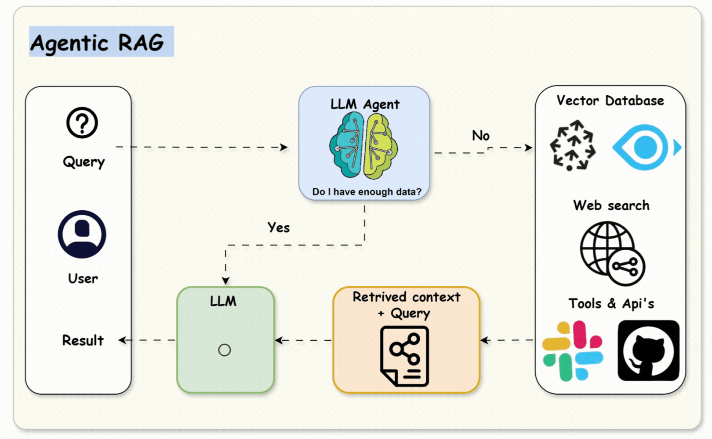
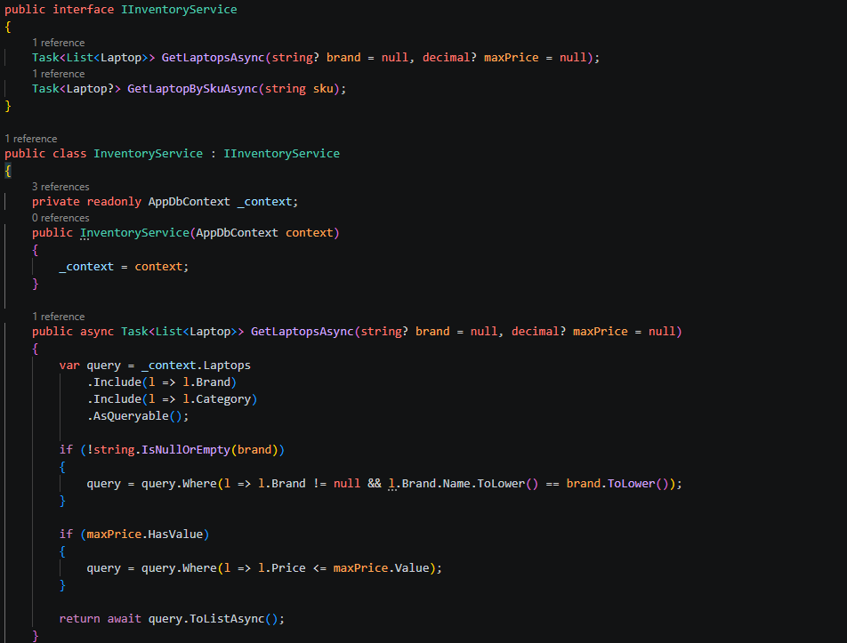
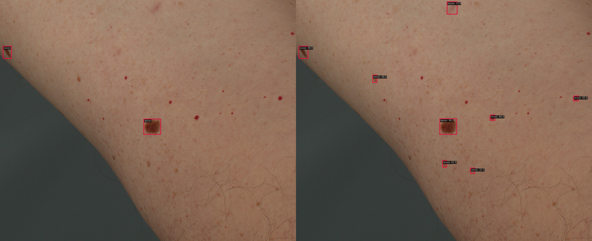
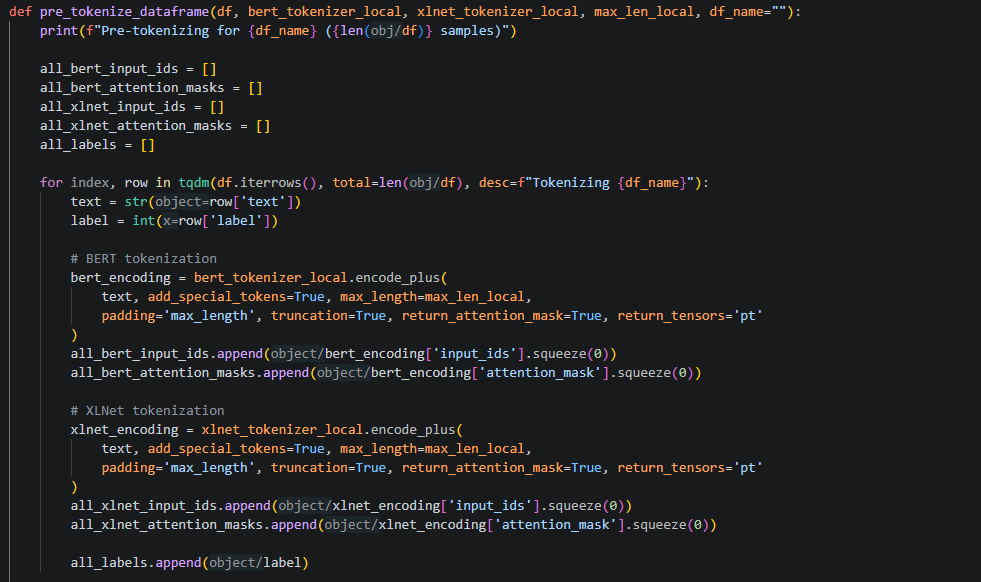
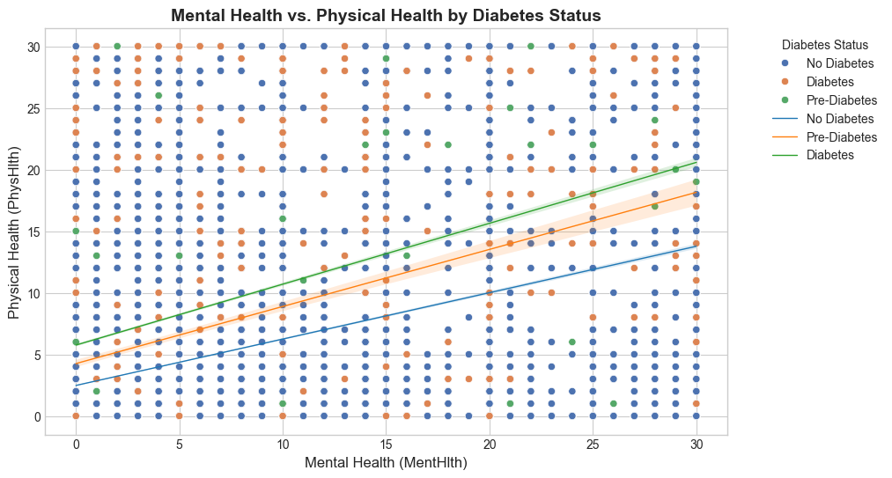

Hi, I'm
Nguyen Minh Man
Quantitative Researcher
& Data Scientist
Mathematics and Computer Science student with a strong foundation in Machine Learning, Deep Learning, and quantitative methods. Experienced in building AI systems and statistical models, with an interest in financial markets and systematic trading. Seeking to apply programming and analytical skills to develop data-driven solutions.
01. Featured Projects

Agentic RAG System
Built agentic RAG pipeline with LangGraph/LangChain, enabling contextual retrieval, multi-turn state, and improved reliability via guardrails.

AI-Driven Inventory Manager
Designed AI agent system (Python, LangGraph) integrated with .NET via MCP, ensuring reliability and security with N-tier architecture.

Deep Learning Approaches for Skin Cancer Detection and Segmentation
Benchmarked 13 detection models on 16.9K images, improving mAP@50 to 76.2% and recall to 84.3% via optimization techniques.

Fake News Detection with a BERT-XLNet Hybrid Model
Built hybrid NLP classifier (BERT + XLNet) with dynamic gating, processing 78K+ articles and achieving 90.42% accuracy, 91.63% recall.

Diabetes Health Indicator Analysis
Performed EDA and statistical testing on 253K+ records, handling imbalance and achieving 94.7% precision with XGBoost.
02. Skills & Technologies
AI & Machine Learning
Data & Databases
Programming & Tools
03. Education & Experience
/ Education
Bachelor of Mathematics and Computer Science
Specialization in Data Science
University of Science, Vietnam National University Ho Chi Minh City.
10/2022 - 10/2026
GPA: 8.85 / 10 (Expected 9.02)
- Merit-based scholarship for 3 semesters (Top 5%).
- Thesis: Semantic Segmentation of Hospital Objects in Indoor Medical Environments.
Certificates and Awards
- Google: AI Essentials, Data Analytics, Gemini Certified Educator.
- English: TOEIC (LR: 940, SW: 320).
- Academic: Excellent Student Award (Geography - 2022).
/ Work Experience
Service Staff
07/2022 - 02/2024
Alagon Saigon Hotel & Spa
Bartender, Waiter, Cashier
Math & Science Lecturer
08/2023 - Present
Nga Nguyen Edu & Training
Teaching students from grade 6 to 12.
Math & ICT Tutor
07/2024 - Present
Trang Luong Academy
Taught mathematical thinking and problem-solving skills, DSA.
Data Annotator
02/2025 - Present
Scale AI (Outlier Platform)
Evaluated AI models and processed RLHF data.
04. What's Next?
Get in Touch!
My inbox is always open. I’ll try my best to get back to you as soon as possible.